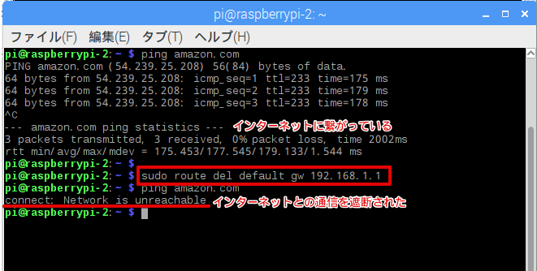

7. オフライン動作の確認¶
オフラインでも、Lambdaが動作し、アラートが出るか確認してみましょう。
AWS IoTのコンソールで、センサーデバイスのシャドウで ”LoadSwitch”を “off”にして、”alert!!!” を停止させて下さい。
次に、Raspberry Piのリモート画面で４つ目のコンソールをオープンして下さい。コマンドラインに下記を入力して、ディフォルトルートを削除し、インターネットとの通信を遮断します。
sudo route del default gw 192.168.1.1
ping amazon.com と入力して、インターネットとの接続が遮断されていることを確認して下さい。
インターネットとの接続は遮断されましたが、VNCでのリモートアクセスは、継続して使用できます。
7.1. オフライン動作を確認¶
インターネットとの接続が遮断されているため、”LoadSwitch” は、使えません。ローカルコマンドで、CPUロードを上げてみましょう。
4つ目のコンソール画面に下記のコマンドを入力します。
yes >> /dev/null
これで、CPUロードが 25% 程度上がります。”alert!!!”が発生するか、確認しましょう。

yes >> /dev/null と入力した、コンソール画面で CTRL + C を押して、yes を停止させます。
確認が終わったら、下記のコマンドを入力して、ディフォルトルートを元に戻しておいて下さい。
sudo route add default gw 192.168.1.1